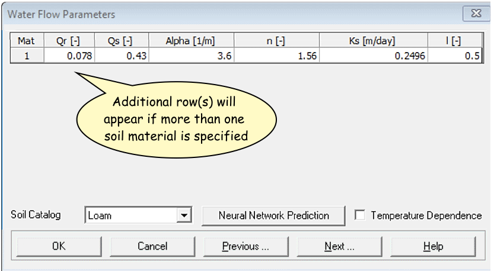
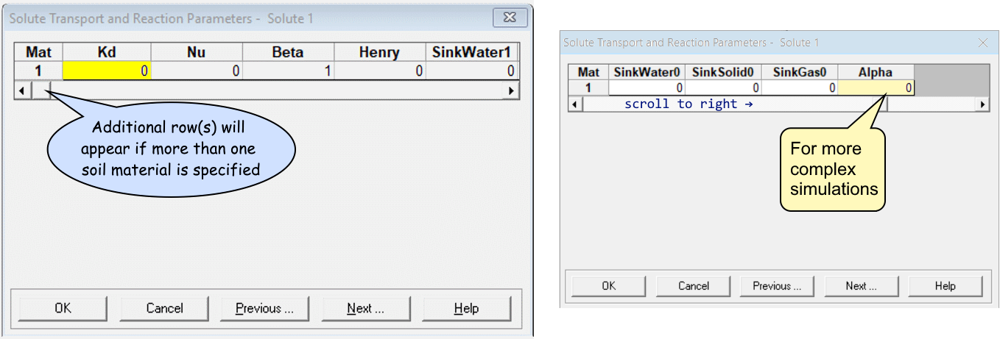
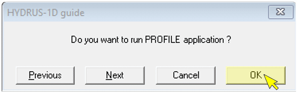

Material to support teaching in Environmental Science at The University of Western Australia
Material to support teaching in Environmental Science at The University of Western Australia
Units ENVT3361, ENVT4461, and ENVT5503
ENVT5503 Hydrus-1D Beginners` Guide
Remediation of Soil and Groundwater
Andrew Rate
2024-09-10
Â

Figure 0: Animation representing simulated solute
transport, made with the gganimate
R package. For the
R code to make this animation and some background
information, go to https://ratey-atuwa.github.io/cybloRg/pulse.html.
Â
Getting Started
This guide should enable you to create a working simulation of solute transport using Hydrus-1D.
Start by opening the Project Manager, and click the
New button:
In the New Project dialog box, type the name (and
optional description), then click OK:
This should open the input dialog (the sub-window name
will be the name you gave it above under New Project).
- Double-click on the items in the
Pre-processingpane (left) to open them, which allows you to change input parameters. - The right side of the window (
Post-processing) will have items in it after a Hydrus-1D project is run

Double-clicking on Main Processes gives a new dialog box
– you should make sure that you check the ☑Solute Transport
checkbox:

You can just keep clicking the Next button to get to
each part of the input set-up:
(Remember you can click the Help button for assistance on
any screen!)
Hints for parameter selection in each input dialog
Geometry Information
- Set Length Units to desired value (cm is OK)
- Use one Soil Material for simple transport, but two or more for reactive barriers etc.
- For horizontal transport use
Decline from Vertical...of ≤ 0.1 - Set
Depthto desired value – this represents our flow path length, so choose something realistic for groundwater!
Time Information
- Set Time Units to desired value (days is OK)
- Set Final Time to match column length and (later) hydraulic conductivity
- You can scale Initial/Minimum/Maximum Time Step up or down depending on whether you increase or decrease Final Time
- Leave other settings as default (for now)
You may need to return to the Time Information dialog
later depending on the output of your initial simulation.
Â
Â
Â
Print Information
- Set Number of Print Times to enable plotting profile information at different times (e.g. 5-10)
- Then click
Select Print Times...and clickDefault(you can try the other settings later)


Â
Iteration Criteria
- Leave these at their default settings for now (we don`t usually need to change these values).

Â
Soil Hydraulic Model
- Leave at default settings for now (the van Genuchten model is a good and widely-used option for relating soil physical properties to the water retention curve.)
Â
Water Flow Parameters
- Select the desired pre-set from the
Soil Catalog
Qr= Residual soil water content, qr
Qs= Saturated soil water content, qs
Alpha= Parameter a in the soil water retention function [L−1]
n= Parameter n in the soil water retention function
Ks= Saturated hydraulic conductivity, Ks [LT−1]
l= Tortuosity parameter in the conductivity function [-]
The individual values can be set manually too.
Â
Water Flow Boundary Conditions
- Leave at default settings for now

Â
Solute Transport
- Make sure
Number of Solutes= 1 - Choose
Pulse Durationto be a fraction (e.g. 0.1 × theFinal Timeset earlier)

Â
Solute Transport Parameters
- You can leave these at defaults, but FYI:

(dimensions are in square brackets [ ] )
Soil Specific Parameters:
Bulk.d. = Bulk density, r
[ML−3]
Disp = Longitudinal dispersivity, DL
[L]
Frac = ...fraction of adsorption sites with instantaneous
sorption...; Set = 1 for equilibrium transport
ThIm = Immobile water content. Set equal to 0 when
physical nonequilibrium is not considered.
Solute Specific Parameters:
Diffus.W = diffusion coefficient in water,
Dw [L²T−1]
Diffus.G = diffusion coefficient in soil air,
Da [L²T−1]
Â
Solute Transport and Reaction Parameters
- Set partition coefficient
Kd> 0 for reactive transport (leaveKd= 0 for non-reactive) - Click the
Helpbutton for details!

Â
Solute Transport Boundary Conditions
Bound. Cond> 0 for each solute (Sol. No.) – this is the initial solute concentration, so it can`t be zero!- Ensure concentrations are realistic and in the correct units set
under
Dimensions
- Ensure concentrations are realistic and in the correct units set
under
- Click the
Helpbutton for details of the other options.

Â
Do you want to run PROFILE application ?
- Yes, you do!

Â
Profile Information dialog
Click
Pressure Head..., then click theEdit Conditionbutton, and select the whole column by clicking top then bottom, then setTopandBottomvalue to 0 (zero) i.e. saturated with waterYou can also set other soil parameters, e.g. material types and observation points – see the video!
Make sure you click save 💾 (you might need to press the [
esc] key first), check the soil profile table display, then you are ready to run Hydrus – see the video!

Â
After a successful Hydrus-1D simulation run, you can use the options in the post-processing window to visualise the output within Hydrus-1D. Alternatively, you can read the data file(s) into Excel® or R and make better graphs!
File name | Contents |
|---|---|
Nod_Inf.out | Separate data matrices at selected `Print times` during simulation. |
Obs_Node.out | Side-by side data matrices for each node depth. |
Solute1.out | Single data matrix for each solute. Contains columns for time, fluxes and concentrations (including cumulative values) at start of flow path (Top), Root zone, end of flow path (Bot). |
Â
More detail is available in the Hydrus-1D manual. We recommend the Hydrus-1D Tutorial (Rassam et al. 2018). Various versions of Hydrus manuals are available at https://www.pc-progress.com/, the mist relevant probably being Šimůnek et al. (2008).
Â
Reading HYDRUS-1D data into R
Users of Hydrus-1D either need to use the limited graphics in
Hydrus itself, open the output files in Excel, or figure out a way of
using more flexible software. So here's my code to read the node
(Profile) information output files from Hydrus-1D
(Nod_Inf.out in the relevant Hydrus-1D project folder) into
an R data frame.
# R code to read Hydrus-1D Nod_Inf.out files into an R data frame
# set full path to Hydrus-1D project directory (folder)
# -=-=-=-=- EDIT THIS TO MATCH THE FOLDER ON YOUR COMPUTER ! -=-=-=-=-
PCdir <- paste0(MyPC,"ENVT5503/Hydrus1D ENVT5503/PRB")
# read Nod_Inf.out file into a vector of character (text) strings
Nod_Inf_out <- readLines(paste0(PCdir,"/","Nod_Inf.out"))
# View(Nod_Inf_out) # optionally check what we just read
# find indices of some rows we want to delete
head_rows <- grep("Node", Nod_Inf_out)
# use indices to delete the rows
Nod_Inf_out <- Nod_Inf_out[-c(seq(1,7),head_rows-2, head_rows-1,
head_rows+1, head_rows+2)]
# find indices of some more rows we want to delete
ends <- grep("end",Nod_Inf_out)[-1*NROW(grep("end",Nod_Inf_out))]
# use indices to delete the rows
Nod_Inf_out <- Nod_Inf_out[-c(ends, ends+1, ends+2)]
# find indices of rows that have the Hydrus-1D print times
time_rows <- grep("Time:", Nod_Inf_out)
# extract the rows with Hydrus-1D print times into a vector
timz <- Nod_Inf_out[time_rows]
# get rid of text around the Hydrus-1D print time values...
timz <- gsub("Time: ","",timz)
timz <- gsub(" ","",timz)
# ...and convert to numbers...
timz <- as.numeric(timz)
# ...then delete the Hydrus-1D print time rows
Nod_Inf_out <- Nod_Inf_out[-c(time_rows)]
# find the rows with column names for each block of print data...
head_rows <- grep("Node", Nod_Inf_out)
# and remove all except the first one
Nod_Inf_out <- Nod_Inf_out[-c(head_rows[-1])]
# strip out all but single spaces from data...
while(NROW(grep(" ", Nod_Inf_out)) > 0) {
Nod_Inf_out <- gsub(" "," ", Nod_Inf_out)
}
# ...and (finally!) delete the very last row (an 'end' statement)
Nod_Inf_out <- Nod_Inf_out[-1*NROW(Nod_Inf_out)]
#
# write the edited output to a file...
writeLines(Nod_Inf_out, con="./NodInf3.out")
# ...and read the file in as space-delimited
node_data <- read.table(file = "NodInf3.out", header = TRUE, sep = " ")
# the is a blank column 1; rename it to "Time"
colnames(node_data)[1] <- "Time"
# use the print times vector to make a vector with
# the relevant time repeated for each block
timz0 <- rep(timz[1], NROW(node_data)/NROW(timz))
for (i in 2:NROW(timz)) {
timz0 <- append(timz0, rep(timz[i], NROW(node_data)/NROW(timz)))
}
# replace the Time colum with the vector we just made...
node_data$Time <- timz0
# ...and convert Time to a factor
node_data$Time <- as.factor(node_data$Time)
# remove temporary objects...
rm(list = c("i","head_rows","Nod_Inf_out","timz","timz0","ends"))
# ...and check the cleaned-up data
str(node_data)## 'data.frame': 707 obs. of 14 variables:
## $ Time : Factor w/ 7 levels "0","80","160",..: 1 1 1 1 1 1 1 1 1 1 ...
## $ Node : int 1 2 3 4 5 6 7 8 9 10 ...
## $ Depth : num 0 -20 -40 -60 -80 -100 -120 -140 -160 -180 ...
## $ Head : num 0 0 0 0 0 0 0 0 0 0 ...
## $ Moisture : num 0.43 0.43 0.43 0.43 0.43 0.43 0.43 0.43 0.43 0.43 ...
## $ K : num 25 25 25 25 25 ...
## $ C : num 0 0 0 0 0 0 0 0 0 0 ...
## $ Flux : num -2.5 -2.5 -2.5 -2.5 -2.5 ...
## $ Sink : num 0 0 0 0 0 0 0 0 0 0 ...
## $ Kappa : int -1 -1 -1 -1 -1 -1 -1 -1 -1 -1 ...
## $ v.KsTop : num -0.1 -0.1 -0.1 -0.1 -0.1 -0.1 -0.1 -0.1 -0.1 -0.1 ...
## $ Temp : num 20 20 20 20 20 20 20 20 20 20 ...
## $ Conc.1..NS. : num 0 0 0 0 0 0 0 0 0 0 ...
## $ Sorb.1...NS.: num 0 0 0 0 0 0 0 0 0 0 ...Plot concentration vs. depth
# check it with a plot
# plot as concentration vs. depth
palette(c("black",viridis::plasma(6, end=0.7)))
par(mar = c(1,4,4,1), mgp = c(1.7,0.3,0), tcl = 0.3, font.lab=2)
plot(-1*(node_data$Depth) ~ node_data[,13],
type = "l", col = 1,
xlim = c(0, max(node_data[,13], na.rm=T)),
ylim = c(-1*min(node_data$Depth, na.rm=T), 0),
subset = node_data$Time==levels(node_data$Time)[1],
xaxt = "n", xlab = "", ylab = "Depth (cm)")
axis(3)
mtext("Concentration", side = 3, line = 1.7, font = 2)
for (i in 2:nlevels(node_data$Time)) {
points(-1*node_data$Depth ~ node_data[,13], col = i,
subset = node_data$Time==levels(node_data$Time)[i],
type = "o", pch = i-2, cex = 0.6)
}
legend("bottomright", legend = levels(node_data$Time),
col = seq(1,nlevels(node_data$Time)),
pch = c(NA,seq(0,nlevels(node_data$Time))),
lwd = 1,
pt.cex=0.85, bty = "n", inset = 0.02,
title = expression(bold("Time (days)")))
Figure 1: Plot of simulated solute concentration vs. vertical depth for each simulation time step, using Hydrus-1D
Plot as concentration vs. horizontal distance
palette(c("black",viridis::plasma(6)))
symz <- rep(21:25,2)
par(mar = c(4,4,1,1), mgp = c(1.7,0.3,0), tcl = 0.3, font.lab=2)
node_data$Distance <- -1*node_data$Depth
plot(node_data[,13] ~ -1*node_data$Distance,
type = "l", col = 1,
ylim = c(0, max(node_data[,13], na.rm=T)),
xlim = c(0, max(node_data$Distance, na.rm=T)),
subset = node_data$Time==levels(node_data$Time)[1],
ylab = "Concentration", xlab = "Distance (cm)")
for (i in 2:nlevels(node_data$Time)) {
points(node_data[,13] ~ -1*node_data$Distance, bg = i,
subset = node_data$Time==levels(node_data$Time)[i],
type = "o", pch = symz[i-1], cex = 0.8)
}
legend("topright", legend = levels(node_data$Time),
pt.bg = seq(1,nlevels(node_data$Time)),
pch = c(NA,symz),
lwd = 1,
pt.cex=0.85, bty = "n", inset = 0.02,
title = expression(bold("Time (days)")))Figure 2: Plot of simulated solute concentration vs. horizontal distance for each simulation time step, using Hydrus-1D
Â
References
Rassam, D., J. Šimůnek, D. Mallants, and M. Th. van Genuchten, The HYDRUS-1D Software Package for Simulating the One-Dimensional Movement of Water, Heat, and Multiple Solutes in Variably-Saturated Media: Tutorial, CSIRO Land and Water, Adelaide, Australia, 183 pp., ISBN 978-1-4863-1001-2, 2018. https://www.pc-progress.com/Downloads/Public_Lib_H1D/HYDRUS-1D_Tutorial_V1.00_2018.pdf
Šimůnek, J., M. Šejna, H. Saito, M. Sakai, and M. Th. van Genuchten, The Hydrus-1D Software Package for Simulating the Movement of Water, Heat, and Multiple Solutes in Variably Saturated Media, Version 4.0, HYDRUS Software Series 3, Department of Environmental Sciences, University of California Riverside, Riverside, California, USA, pp. 315, 2008. (PDF 2.7MB)
Â
CC-BY-SA • All content by Ratey-AtUWA. My employer does not necessarily know about or endorse the content of this website.
Created with rmarkdown in RStudio. Currently using the free yeti theme from Bootswatch.